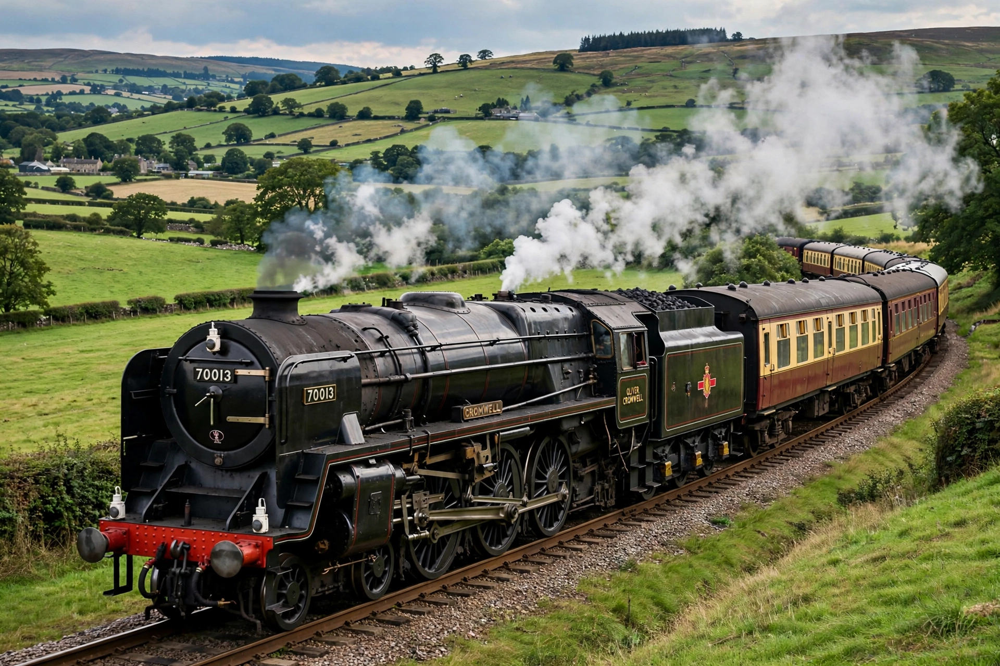

Steam locomotive
From Wikipedia, the free encyclopedia

A preserved steam locomotive in operation.A steam locomotive is a locomotive that provides the force to move itself and other vehicles by means of the expansion of steam. Fuel — typically coal, oil or wood — is burned in a firebox to heat water in a boiler, and the resulting high-pressure steam drives pistons that turn the driving wheels via connecting rods. Steam locomotives powered the world\'s railways from the early 1800s until the mid-20th century.
Origins
Richard Trevithick built the first locomotive to run on rails in 1804 at Pen-y-darren in Wales. The Stockton and Darlington Railway (1825) and the Liverpool and Manchester Railway (1830), engineered by George Stephenson, proved steam railways commercially, and designs matured rapidly with larger boilers and multiple coupled axles.
How it works
Water in the boiler is heated by hot gases from the firebox passing through tubes; steam collects in a dome and is admitted to cylinders on each side, where it pushes pistons back and forth. Side rods couple the driving wheels together, and exhaust steam is blasted up the chimney, drawing the fire as it goes.
Decline and preservation
Diesel and electric traction offered lower operating costs, and mainline steam ended in Britain in 1968 and earlier in most of North America. Thousands of locomotives survive in preservation, hauling heritage trains, and new-build projects have even recreated lost designs such as the British A1 Pacific \'Tornado\' (2008).